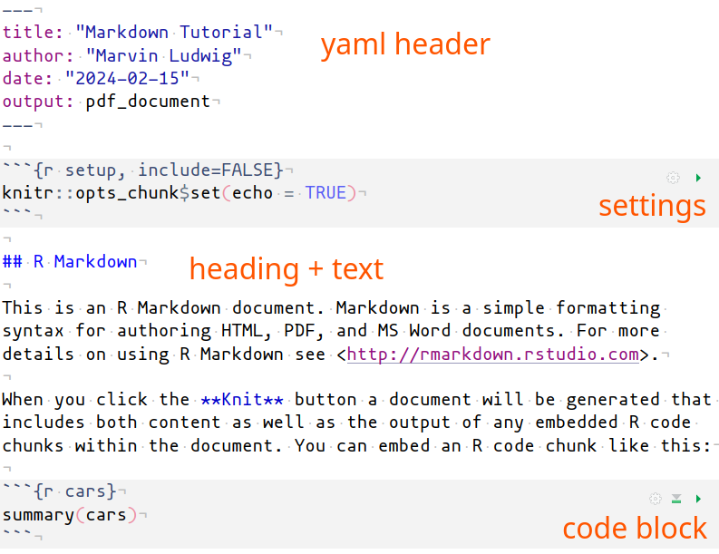
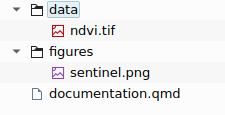

markdown
Rstudio is much more than a code editor for R. It supports a variety of programming languages, documentation formats and data types. One of Rstudio’s most used and most powerful features is the creation of markdown documents with integrated R code. In fact, this entire course page is written in markdown within Rstudio and then rendered as a website. As with Rstudio Version v2022.07, the markdown system of choice is quarto - “An open-source scientific and technical publishing system” https://quarto.org/. Older versions use rmarkdown. https://rmarkdown.rstudio.com/.
Depending on the markdown system you are using, the typical file ending for the markdown files are either .qmd or .rmd.
What is markdown?
Markdown is a “language” to format text. There are dedicated symbols for different purposes:
| Markdown Syntax | Output |
|---|---|
|
italics, bold, bold italics |
|
Header 1 |
|
Header 2 |
|
Quarto |
These examples are taken from https://quarto.org/docs/authoring/markdown-basics.html where you can find more more markdown syntax.
Using markdown in Rstudio
Simply go to File - New File - Quarto Document... or File - New File - R Markdown... to create a markdown file with some example code and work your way from there. Or if you want to jump right into markdown projects go to New Project... - New Directory and choose an appropriate Template (e.g. Quarto Homepage).
File Structure
File Paths
If you want to use external files in your markdown document, e.g. data input in an R code chunk or an image you want to include, it is highly recommended that you use relative file paths.

ndvi = terra::rast("data/ndvi.tif")
knitr::include_graphics("figures/sentinel.png")
Task
Create a new quarto markdown file. Document your learning outcomes with data, code and figures.